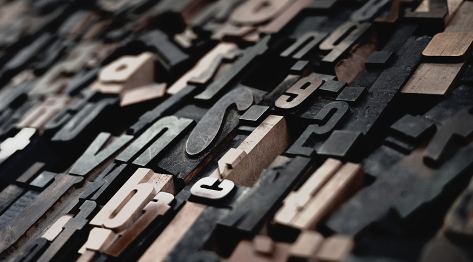
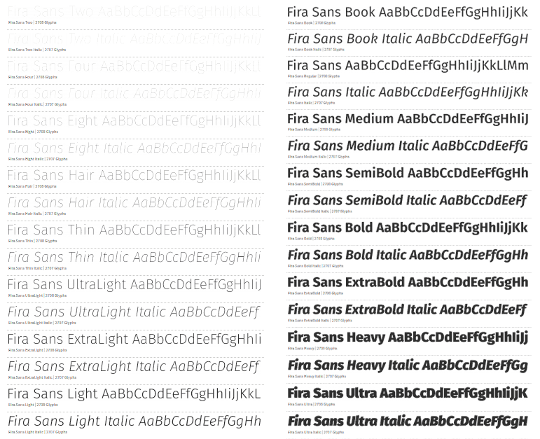

Czcionka i font – czy jest jakaś różnica?
Czcionka i font to obecnie pojęcia stosowane wymiennie. Dawniej przez czcionkę rozumieliśmy metalowy bloczek wykorzystywany w tradycyjnej technice drukarskiej, na którym znajdowała się wypukła litera, która następnie dociskana była na papierze.

Font natomiast jest cyfrową postacią pisma z każdym poszczególnym znakiem zaprojektowanym w formie wektorów lub bitmapy. Ponieważ w środowisku cyfrowym czcionek nie odlewamy ani nie odciskamy, tylko projektujemy fonty w dedykowanych programach (takich jak FontLab), często można usłyszeć głosy, że pojęć „czcionka” i „font” nie należy używać zamiennie. Z drugiej jednak strony, próżno szukać w większości polskich słowników hasła „font”. Równie istotny jest tutaj fakt, że zdecydowana większość internautów wyszukuje fontów właśnie pod frazą „czcionka”.
Krój pisma
Krój pisma to obraz kompletu znaków pisma o jednolitych i spójnych cechach graficznych: stylu, rytmie, proporcji, kształcie szeryfów itp. Często występuje w wielu odmianach, czasami nawet znacznie różniących się od kroju podstawowego, jednak zawsze zachowujących w sposób konsekwentny główne założenia graficzne danej rodziny krojów.

Przykładem bardzo licznej rodziny fontów jest Fira. W serwisie Font Squirrel znaleźć można około 100 odmian tego kroju.
Kroje pisma możemy sklasyfikować na kilka sposobów. Najpopularniejsze, najbardziej podstawowe rozróżnienie to podział na fonty szeryfowe i bezszeryfowe.
Krój szeryfowy (serif) – szeryfy to elementy ozdobne pisma, kreski stosowane w wielu krojach w celu zwiększenia jego dekoracyjności. Jeśli dany font został zaprojektowany z wykorzystaniem szeryfów, to powinny być one konsekwentnie stosowane w całym zestawie znaków pisarskich danego fontu. Pismo szeryfowe wywodzi się z kutych w kamieniu napisów starożytnego Rzymu, a szeryfy i różnicowana grubość linii symbolizują ślad dłuta kamieniarskiego.
Wyróżniamy kilka podstawowych rodzajów szeryfów:
- szeryf klinowy w postaci trójkątów (np. Minion),
- belkowe w postaci jednolitych prostokątów (np. Museo Slab),
- kreskowe w postaci cienkich kresek, skontrastowanych z główną linią znaku (np. Theano Didot),
- skryte, czyli nieznaczne poszerzenia na końcach znaków (np. Fontin),
- niektóre kroje pisma mają również szeryfy występujące na średniej linii znaku.
Krój bezszeryfowy (sans serif) – krój pisma pozbawiony szeryfów. Taki tekst na ekranie komputera sprawdzał się niegdyś lepiej, co wynikało bezpośrednio z niskiej rozdzielczości dostępnych ekranów, a co za tym idzie niedokładnego wyświetlania drobnych szeryfów. Mimo iż współcześnie problem ten raczej nie występuje, to użycie krojów bezszeryfowych w sieci przyjęło się jako swego rodzaju standard, który jednak nie jest powszechnie i bezwzględnie przestrzegany.